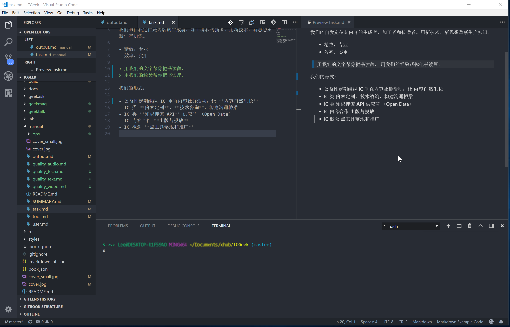

IC 极客内容生产工具链
文章以 Markdown 为主力格式，所有入库的文章必须以 Markdown 格式入库。
存储格式为 Markdown，如果嘉宾不会使用 markdown，需要一些协助。
VSC
插件配备
- Markdown All in One
- markdownlint
- Markdown Preview Enhanced
- Python
- Gitbook kit
- Perl Debug
- Tcl
- pangu

Gitbook
需要先安装 nodejs，然后安装 gitbook 包。
安装方法稍后更新
Calibre
下载安装 Calibre
gitbook 需要 calibre 的转 PDF 功能。
Git
git Window 客户端
GIMP
图像编辑软件
- 下载安装： GIMP
- 统一版本：2.10.2
Dia
流程制作工具
下载安装 Dia
在线资源
- https://unsplash.com/
- https://www.freeimages.com/
- https://www.dafont.com/
- http://www.fonts.net.cn
- http://1024tools.com/
- http://www.58pic.com
内容模板建设
内部使用 (Internal Only)